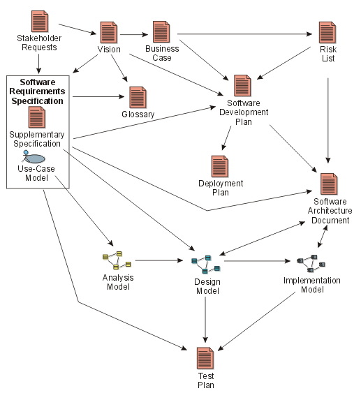
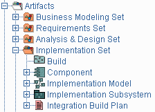
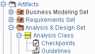
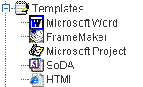

Key Concept: Artifact
Activities have input and output
artifacts. An artifact is a work product of the process: roles use artifacts to perform activities, and produce artifacts in the course
of performing activities. Artifacts are the responsibility of a single role and promote the idea that every piece of information in the process must be the
responsibility of a specific person. Even though one person may "own"
the artifact, many other people may use the artifact, perhaps even updating it
if they have been given permission.

Major artifacts in the process, and the
approximate flow of information between them.
The diagram above shows how information flows through the project, via the
artifacts; the arrows show how changes in one artifact ripple through other
artifacts along the arrows. For clarity, many artifacts are omitted (e.g. the
many artifacts in the design model are omitted, being represented by the
Artifact: Design Model).
To simplify the organization of artifacts, they are organized into
"information sets", or artifact sets. An artifact set
is a grouping of related artifacts that tend to be used for a similar purpose.
The Artifact Overview presents
more information on artifacts and artifact sets.

Artifacts and artifact sets in the
treebrowser
Artifacts may take various shapes or forms:
Note that "artifact" is the term used in the RUP. Other processes use terms such as work product,
work unit, and so on, to denote the same thing. Deliverables
are only the subset of all artifacts that end up in the hands of the customers
and end-users.
Artifacts are most likely to be subject to version control and
configuration management. This is sometimes only achieved by versioning
the container artifact, when it is not possible to do it for the elementary,
contained artifacts. For example, you may control the versions of a whole design
model, or design package, and not of individual classes they contain.
Artifacts are typically not documents. Many processes
have an excessive focus on documents, and in particular on paper documents.
The RUP discourages the systematic production of paper
documents. The most efficient and pragmatic approach to managing project
artifacts is to maintain the artifacts within the appropriate tool used
to create and manage them. When necessary, you may generate documents
(snapshots) from these tools, on a just-in-time basis. You should also consider
delivering artifacts to the interested parties inside and together with the
tool, rather than on paper. This approach ensures that the information is always
up-to-date and based on actual project work, and it shouldn’t require any
additional effort to produce.
Examples of artifacts:
- A design model stored in Rational Rose.
- A project plan stored in Microsoft Project.
- A defect stored in Rational ClearQuest.
- A project requirements database in Rational RequisitePro.
However, there are still artifacts which have to be plain text documents, as
in the case of external input to the project, or in some cases where it is
simply the best means of presenting descriptive information.
Artifacts typically have associated guidelines and checkpoints which present
information on how to develop, evaluate and use the artifacts. Much of the substance
of the Process is contained in the artifact guidelines; the activity descriptions
try to capture the essence of what is done, while the artifact guidelines capture
the essence of doing the work. The checkpoints provide a quick reference to
help you assess the quality of the artifact.
Both guidelines and checkpoints are useful in a number of contexts: they help
you decide what to do, they help you to do it, and they help you to decide if
you've done a good job when you're done. Guidelines and checkpoints related
to each specific artifact are organized along with that artifact in the treebrowser.
Artifact guidelines are also summarily presented in the Artifact
Guidelines Overview.

A typical artifact in the treebrowser, with checkpoints and
guidelines expanded.
Templates are "models," or
prototypes, of artifacts. Associated with the artifact description are one or
more templates that can be used to create the corresponding artifacts. Templates
are linked to the tool that is to be used.
For example:
- Microsoft Word templates would be used for artifacts that are documents,
and for some reports.
- Rational SoDA templates for Microsoft Word or FrameMaker would extract information
from tools such as Rational Rose, Rational RequisitePro, or Rational
TeamTest.
- Microsoft FrontPage templates for the various elements of the process.
- Microsoft Project template for the project plan.
As with guidelines, organizations may want to customize the templates prior
to using them by adding the company logo, some project identification, or
information specific to the type of project. Templates are organized in the
treebrowser beneath their associated artifact. They are also summarized in a
separate treebrowser entry showing all templates.

Expanded portion of the treebrowser,
showing the different kinds of templates in the RUP.
Models and model elements, may have
reports associated with them. A report extracts information about models and
model elements from a tool. For example, a report presents an artifact or a set
of artifacts for a review. Unlike regular artifacts, reports are not subject to
version control. They can be reproduced at any time by going back to the
artifacts that generated them. Reports are organized in the treebrowser beneath
the artifact on which they report.
Copyright
© 1987 - 2001 Rational Software Corporation
|  Overview >
Overview >
 Key Concepts >
Key Concepts >